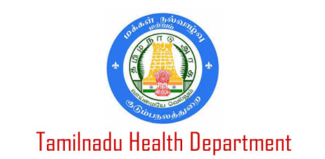
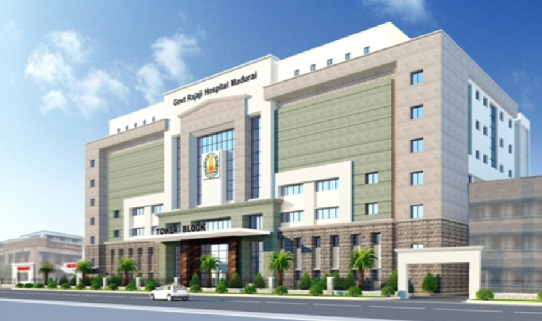
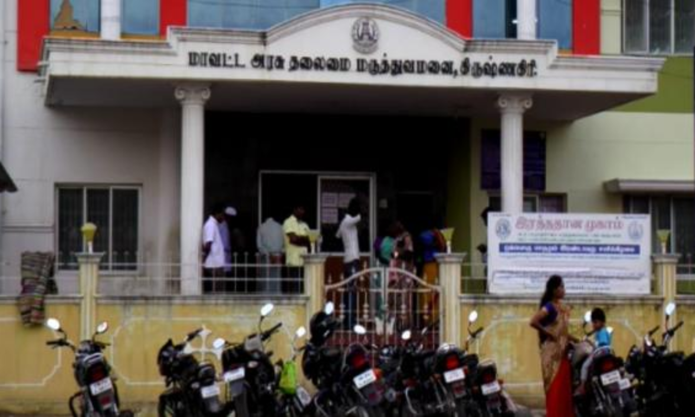
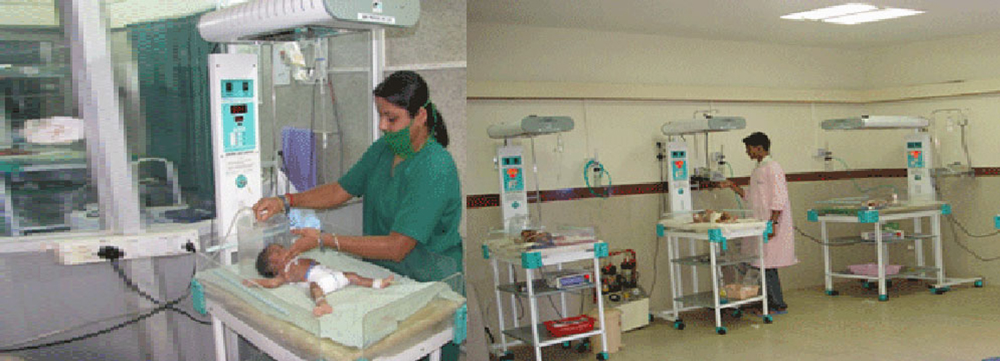

TAMILNADU GOVERNMENT OF INDIA

Visit Official Government Websites: www.TNgovt-Hospitals.in
Tamil Nadu Government Multi-Super-Speciality Hospital is a 400-bed government-owned super-speciality hospital in Chennai, India. It is located at the Omandurar Government Estate on Anna Salai and was opened in February 2014. Originally built as Tamil Nadu legislative assembly and secretariat complex in 2010 to house the assembly hall, secretariat and offices of the chief minister and cabinet ministers,[1] the complex was later converted into a super-speciality hospital. It was built in 1.93 million sq ft. at a total cost of ₹ 4,250 million in 2010.
   History
Attempts to build a new assembly complex dates back to 1983 when M. G. Ramachandran was the chief minister. He floated the idea of constructing an assembly complex in front of Marina beach and even moving to Tiruchirappalli during severe water scarcity in Chennai city. The idea was later revived again in 2002 when J. Jayalalithaa was the chief minister. She announced in the Assembly that the government was considering a 2,000-acre administrative city near Maamallapuram. Later it was stated that the proposed city would come up in Thiruvidanthai and Thaiyur villages, about 40 km south of Chennai. In January 2003, the Chennai Metropolitan Development Authority (CMDA) signed an agreement with the Construction Industry Development Board of Malaysia for a feasibility study of the administrative city project. Subsequently, Jayalalithaa informed the Assembly that as the proposed administrative city would take 15 to 25 years to build, the Secretariat would be shifted to a vacant space opposite the Marina Beach in two years. Originally, the Lady Willingdon College campus was chosen. But, since the area (about 15 acres) of the campus was found inadequate, she came up with the proposal of building a new Integrated Assembly building in the 30-acre Queen Mary's College, Chennai campus, which she announced in April 2003. But this was dropped due to opposition from the political parties and the students of the concerned college.